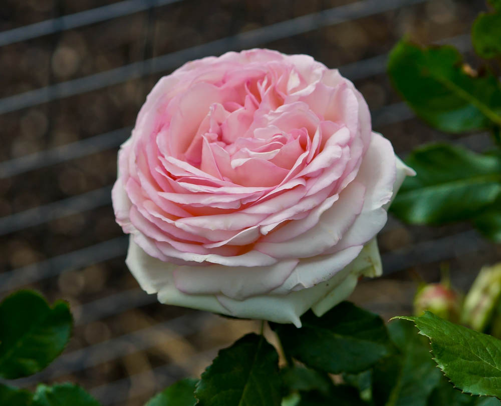
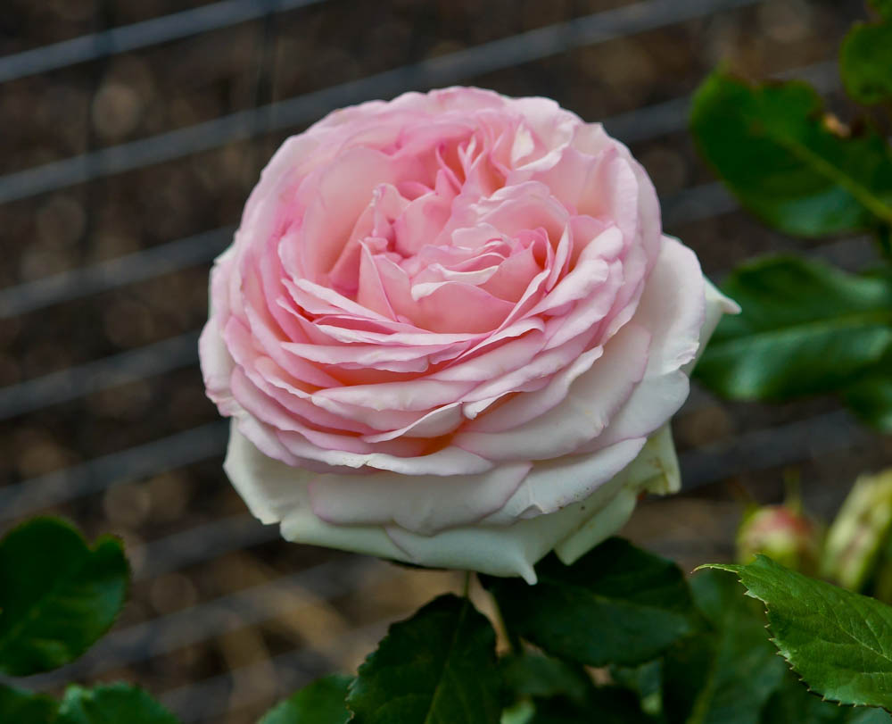

Lily
Lily Kesselringianum
Lily Kesselringianum 60-100 cm high with straw-yellow tubular flowers.
Lily martagon
Lily martagon 80-120 cm high with turban-like lilac flowers
Lily pardalinum
Lily paradium - 60-120 cm high turban-shaped raspberry-red flowers. Also petals have a leopard color.
Rose
 

Pierre de Ronsard
This rose was named after the French medieval poet and literary figure. This variety of roses is considered not only beautiful, but also expensive. Louis de Funes was a big fan of these roses.


Rose de Resht
Portland roses have been known since the 17th century. Resht is the name of the Iranian city from where this variety came to Europe. This is one of the best varieties of roses with strong aroma and long flowering.
Dijon
This beautiful rare variety of roses grows in the tropics and it is able to bloom all year round.
Thuya
Smaragd
Tall tree with emerald green needles, dense and conical crown.
Brabant
Evergreen coniferous plant characterized by big size and rapid growth.
Wagneri
This tree with an ovoid or conical-ovoid crown has small stature - up to 3.5 m tall.